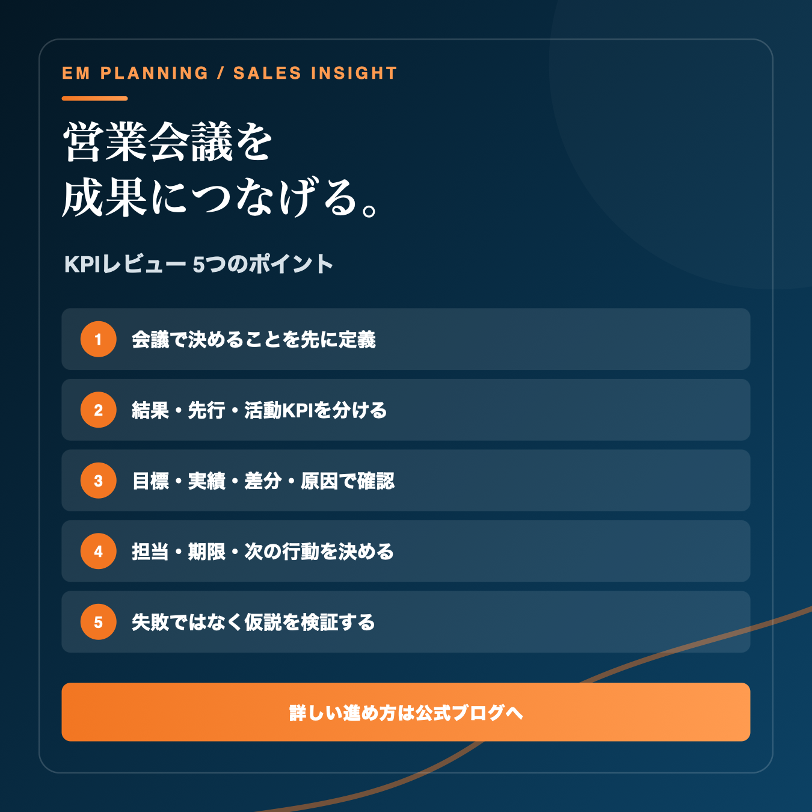

営業会議で数字を報告しているのに、現場の行動が変わらない。案件の進捗を順番に読み上げるだけで時間が終わる。この状態を変える鍵は、会議の目的を「共有」から「意思決定」へ切り替えることです。
なぜ営業会議が成果につながらないのか
営業会議が長くなる典型的な原因は、情報共有と意思決定が混在していることです。案件の経緯や活動件数を一人ずつ口頭で説明すると、状況を知るだけで会議時間の多くを使います。資料で事前に確認できる内容まで会議で読み上げる必要はありません。
会議で扱うべきなのは、目標との差分が生じた理由、停滞している工程、優先する案件、今週変える行動です。つまり、会議の成果物は議事録ではなく「次の行動が明確になった状態」です。
何をするか／誰が行うか／いつまでに行うか／どの数字で結果を確認するか
KPIレビュー5つのポイント
- 01会議で決めることを先に定義する
「案件進捗を共有する」では目的が曖昧です。「停滞案件の次の打ち手を決める」「受注率低下の原因仮説を一つ選ぶ」など、会議後に変わるものを言葉にします。
- 02結果・先行・活動KPIを分ける
売上や粗利は結果KPI、商談数や提案数は先行KPI、架電・メール・訪問は活動KPIです。結果だけでは改善が遅く、活動量だけでは成果とのつながりが見えません。3段階を並べてボトルネックを特定します。
- 03目標・実績・差分・原因の順で見る
実績だけを読むのではなく、目標との差を確認します。そのうえで「なぜ差が生じたか」を顧客層、提案内容、案件段階、活動の質と量に分解します。原因を決めつけず、検証可能な仮説にします。
- 04担当者・期限・次の行動を確定する
「引き続きフォローする」では行動になりません。「9月9日までに決裁者へ費用対効果資料を送付し、次回商談日を確定する」のように、第三者が読んでも実行内容が分かる状態にします。
- 05個人ではなく仮説と仕組みを検証する
未達を担当者の努力不足だけで終わらせると、学びが組織に残りません。対象顧客、訴求、提案資料、価格、追客間隔など、営業プロセスのどこを変えるかを話し合います。

45分で終える営業会議の進行例
| 時間 | 確認すること | 会議で決めること |
|---|---|---|
| 0〜5分 | 売上・粗利・受注など結果KPI | 今週優先して扱う差分 |
| 5〜15分 | 商談・提案など先行KPI | 詰まっている営業段階 |
| 15〜30分 | 重要案件と失注・停滞理由 | 原因仮説と優先案件 |
| 30〜40分 | 改善案と必要な支援 | 担当者・期限・次の行動 |
| 40〜45分 | 決定事項の読み合わせ | 次回確認する指標 |
案件数が多い場合も、全案件を同じ深さで確認しません。前週から数字が変化した案件、停滞期間が基準を超えた案件、粗利や確度に注意が必要な案件へ絞ることで、判断に時間を使えます。
会議資料は1画面で判断できる最小構成に
資料の情報量が多すぎると、数字を探すことが仕事になります。まずは次の4領域を一つの画面または一枚の資料にまとめます。
結果
売上、粗利、受注件数、継続率。事業として得たい成果を確認します。
先行
商談数、提案数、決裁者接点、見積提出。結果へ近い工程を確認します。
活動
新規接触、追客、訪問、紹介依頼。改善可能な日々の行動を確認します。
案件
金額、確度、次回行動、期限、停滞日数。優先順位と支援の必要性を確認します。
KPIの設計自体を見直したい場合は、営業KPIの設計方法もあわせてご覧ください。売上だけでなく採算まで会議へ組み込む場合は、営業利益を改善する7つの視点が参考になります。
避けたい3つの落とし穴
1．数字の読み上げに時間を使う
共有だけで済む情報は事前資料へ移し、会議では差分と判断が必要な項目だけを扱います。
2．未達の理由を精神論で終える
「もっと頑張る」では再現性がありません。対象顧客、訴求、活動量、商談品質、追客のどこを変えるかまで分解します。
3．決定事項を次回確認しない
行動を決めても振り返らなければ、改善サイクルは止まります。前回の打ち手、実行状況、数字の変化を次回会議の冒頭で確認します。
次回の営業会議で使えるチェックリスト
- 会議で決めることが一文で書かれている
- 目標と実績の差分が見える
- 結果・先行・活動KPIがつながっている
- 優先して議論する案件が絞られている
- 原因が検証可能な仮説になっている
- 担当者・期限・次の行動が決まっている
- 次回確認する数字が決まっている